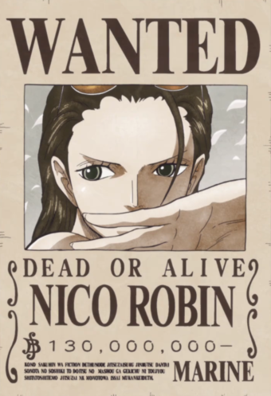

Les Mugiwara (Les chapeau de paille)
| Photo de l'équipage | L'équipage du Chapeau de Paille |
| Monkey D.Luffy Capitaine de l'équipage, il ambitionne d'être le roi des pirates. Son corp est élastique. |
|
 | Roronoa Zoro Ancien chasseur de prime c'est le second et un sabreure hors paire. Il vise à être le meilleur sabreur. |
| Sanji Vinsmoke Cuisignier de l'équipage, il se bat grace a ses pieds. Il rêve de trouver la mer légendaire |
|
| Usopp Canonnier de l'équipage, il souhaite devenir un valeureux guerrier. C'est un sniper d'élite |
|
 | Nami Navigatrice de l'équipage, elle se bat grace a un baton climatique. Elle veux faire une carte complaite du monde |
 | Tony-Tony Chopper Médecin de l'équipage, c'est un renne avec le pouvoir de l'humain et de réaliser plusieurs transformation. |
|  | Nico Robin Archéologue, elle cherche a retrouver la véritable histoire des Rio ponéglyphe. Elle a un pouvoir de faire pousser des membre de partout. |
| Franky Ingénieur naval de l'équipage, il rêve de construire le meilleur bateau du monde. C'est devenu cyborgue suite a un accident |
|
| Brook Musicien de l'équipage, Il a ressusciter grace a son pouvoir et se bat grace a sa canne-épée. |
|
 | Jinbei Timonier de l'équipage, c'est un homme-requin-baleine et se bat garce a son karaté de hommes-poisson. |
L'équipage de Kaido (Les cents bête)
| Photo de l'équipage | Equipage de Kaido au cent bêtes |
| Kaido Capitaine de l'équipage, il a le pouvoir de se transformer en dragon. |
|
| Les Calamités : (les plus grands officier de l'équipage) |
|
| Jack la Sécheresse il a le pouvoir de se transformer en mammouth. |
|
| Queen La Pandémie il a le pouvoir de se transformer en branchiosaure. |
|
| King L'Incendie il a le pouvoir de se transformer en ptéranodon. |
|
| Les Headliners ils s'occupent des ville possédées par l'équipage et ont des pouvoirs variés. |
|
| Les Gifters première division de l'équipage, il ont certains membres transformé en celuis d'un animal. |
|
 | Les Pleasures deuxième division de l'équipage, ils n'ont pas de pouvoir suite a leur essaie raté d'en avoir. |
| Les Waiters Il n'ont pas de pouvoirs car ils attendent la possibiliter d'en obtenir. |
|
| Les Number ils sont des essaies pour reproduire des géant antiques |
|
| Orochi Kurozumi (allié) il a le poivoir de se transformer en dragon a huit têtes |
|
| Il ont aussi des allié sous leur ordres (anciens équipages pirate vaincu) |
|